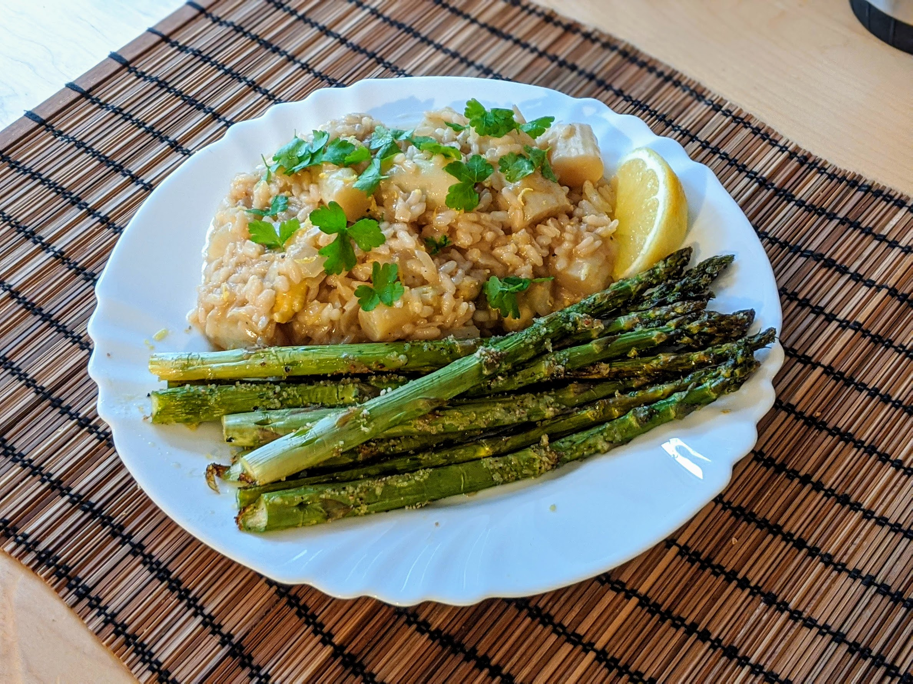

Risotto aux asperges

Ici avec des asperges rôties.
Pour 4 personnes :
- Une botte d'asperges blanches
- 2L de bouillon de légumes (on utilise pas tout)
- 300g de riz à risotto
- Un gros oignon
- Un citron bio
- Un peu de parmesan (ou d'emmental)
- Du persil
- Un peu de beurre
- Un verre de vin blanc
- Sel, poivre, huile d'olive
- Laver les asperges, et couper quelques centimètres du bout le plus dur. Les couper en tronçons de 3-4 cm.
- Faire chauffer le bouillon jusqu'à ce qu'il bouille, y faire cuire les
asperges. En tout, il faut qu'elles cuisent environ 20 minutes, et plutôt 10-15
minutes pour les têtes.
- Pendant ce temps, éplucher et émincer l'oignon, le faire blondir au fond d'une grande poêle dans une quantité généreuse d'huile d'olive, à feu moyen-fort.
- Lorsque l'oignon commence à dorer, ajouter le riz quelques minutes pour le rendre translucide.
- Puis, cuire le risotto : ajouter d'abord le vin, puis quand il est bien absorbé, ajouter le bouillon louche à louche. Ne prendre que le bouillon au début, puis lorsque les asperges commencent à être bien fondantes (d'abord les têtes, puis le reste), ajouter les asperges progressivement.
- En parallèle, rincer le citron, le zester et récupérer le jus. Laver et émincer le persil.
- À la fin de la cuisson, ajouter le fromage, saler si besoin, poivrer, retirer du feu, et ajouter le jus et le zeste de citron avec du persil (en gardant un peu de persil et de zeste pour décorer sur les assiettes).
Retour à la liste des recettes